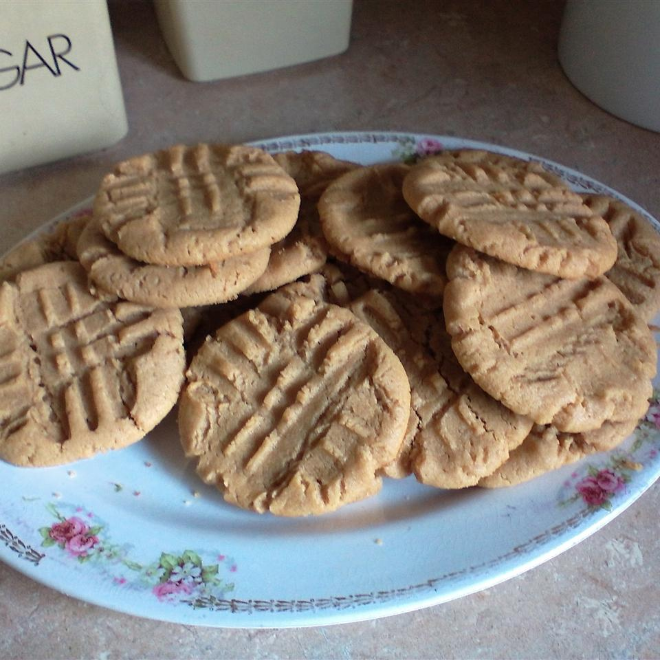

Peanut Butter Cookies

Recipe description
This is an amazing no-flour peanut butter cookie. It is so easy, even kids like to make it.
Ingredients
- 2 cups peanut butter
- 2 cups white sugar
- 2 eggs
- 2 teaspoons baking soda
- 1 pinch salt
- 1 teaspoon vanilla extract
Steps
- Preheat oven to 350 degrees F (175 degrees C). Grease cookie sheets.
- In a medium bowl, stir peanut butter and sugar together until smooth. Beat in the eggs, one at a time, then stir in the baking soda, salt, and vanilla. Roll dough into 1 inch balls and place them 2 inches apart onto the prepared cookie sheets. Press a criss-cross into the top using the back of a fork.
- Bake for 8 to 10 minutes in the preheated oven. Allow cookies to cool on baking sheet for 5 minutes before removing to a wire rack to cool completely.